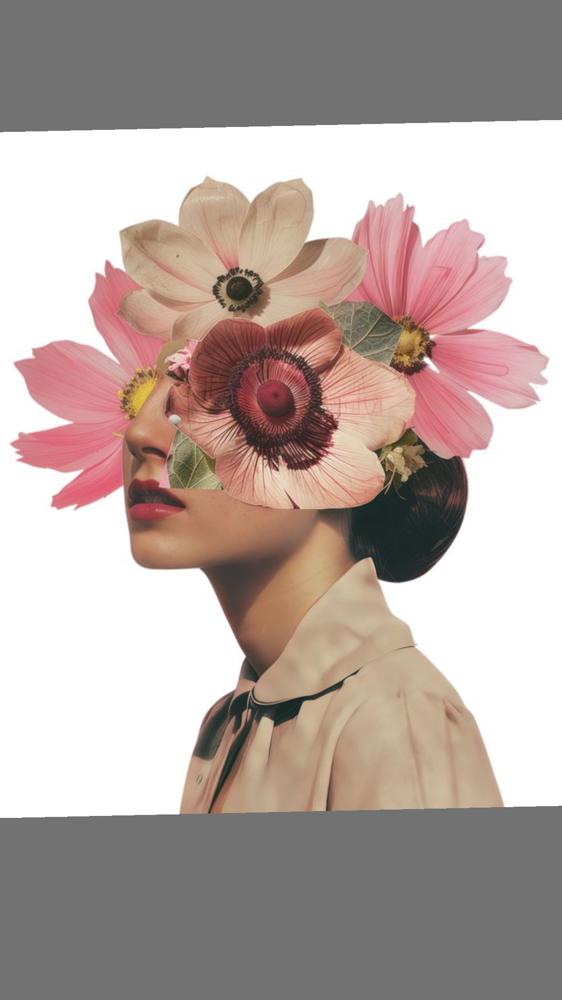
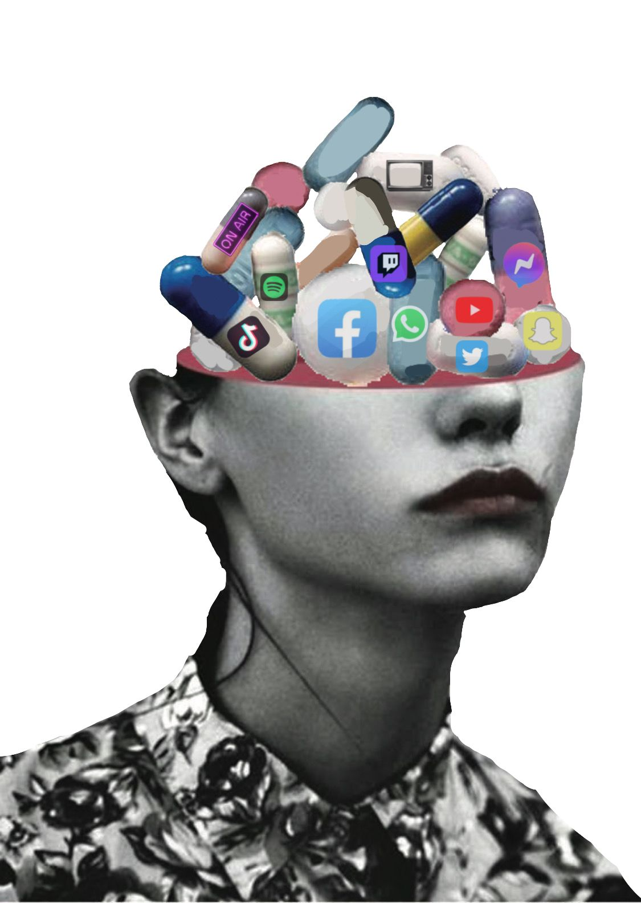

Selecciona
Un detalle llamativo puede ocupar el primer plano y desplazar el contexto.
Pon a prueba cómo reconoces una comparación, una norma o una promesa comercial. Luego observa qué pistas encontró un clasificador sencillo.
NO HAY RESPUESTAS SOBRE TI · ANALIZAMOS MENSAJES
Un detalle llamativo puede ocupar el primer plano y desplazar el contexto.
Comparamos nuestra vida completa con una imagen elegida y editada.
La repetición puede hacer que una norma cultural parezca natural.
Preguntamos de dónde viene una idea y qué evidencia la sostiene.
Toca una categoría o arrastra la afirmación hasta ella. El sello aparece al instante y revela qué pista ayudó a clasificarla.
TARJETA 1 / 6

Arrastra o elige una categoríaEn pantalla táctil: toca una categoría. Con teclado: usa Tab y pulsa Enter o Espacio.
¡MENSAJES DESMONTADOS!
Escribe o pega un mensaje sobre apariencia, cuidado o bienestar. El análisis local buscará señales de lenguaje y te mostrará por qué sugiere una lectura.
Este prototipo usa reglas transparentes y palabras clave en tu navegador. No es un modelo de IA entrenado: puede pasar por alto sentidos, bromas, contexto cultural o frases nuevas. No evalúa personas ni diagnostica.